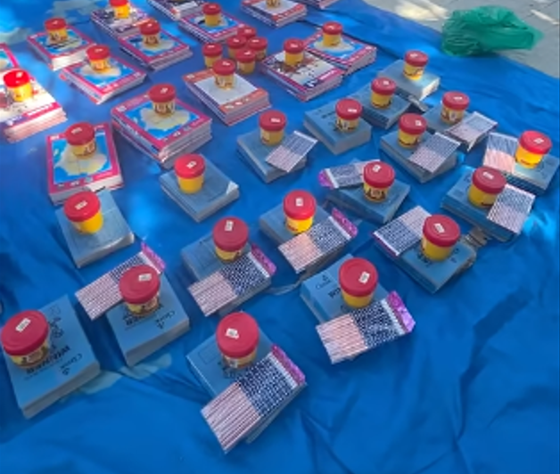
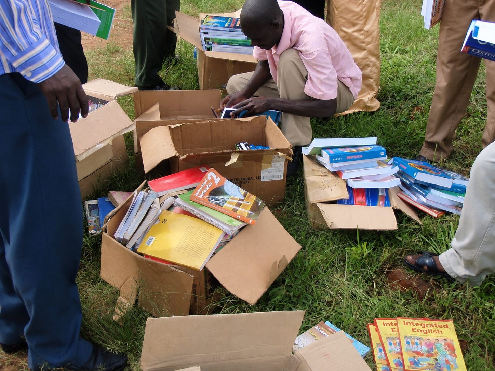
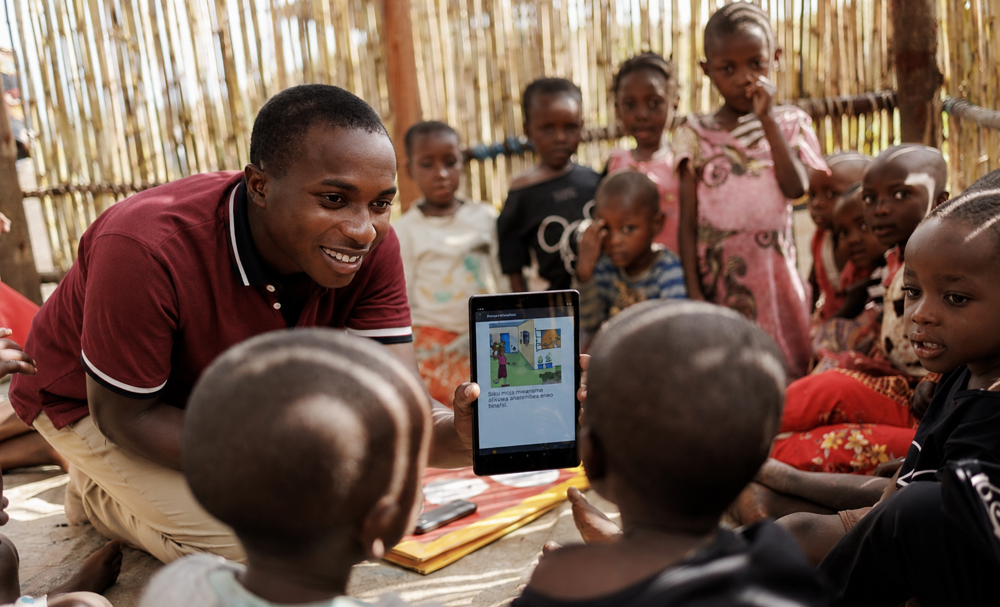
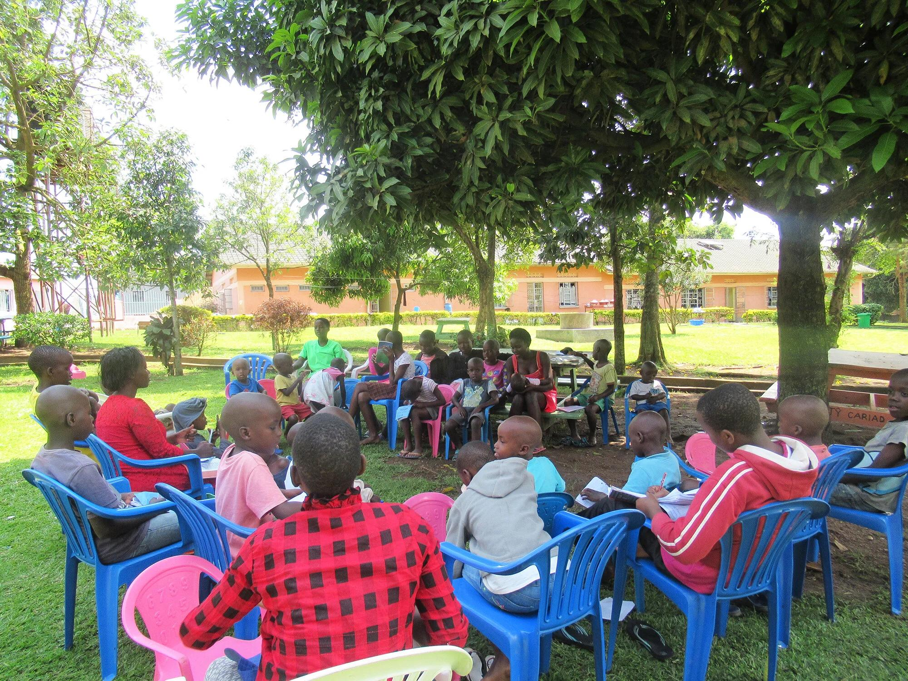

Real Impact: Josh’s Story
Josh is a 10-year-old boy who has never been to school and survives by collecting plastic bottles.
His dream is to become a doctor, but poverty keeps him out of school.
Supporting vulnerable children in Uganda through education, mentorship, life skills, safety awareness, and family support.
Josh is a 10-year-old boy who has never been to school and survives by collecting plastic bottles.
His dream is to become a doctor, but poverty keeps him out of school.

We help vulnerable children return to and remain in school by supporting school fees, uniforms, scholastic materials, and other essential education needs.

We provide books, pens, bags, and other learning materials so children can participate in school with dignity and the resources they need to learn.

We support children through tutoring, academic guidance, mentorship, and encouragement to help them improve their performance, build confidence, and stay engaged in their education.

We help children develop leadership, confidence, communication, problem-solving, and other practical life skills that support their personal growth and future opportunities.
We promote water-safety awareness and child protection to help children recognize risks, avoid dangerous situations, and know how to seek appropriate help when they or another child may be in danger.
Our Water Safety Campaign includes school-based awareness sessions, practical demonstrations, educational materials, safety messages, and engagement with teachers and volunteers. The campaign begins with a pilot and is intended to inform future expansion to additional schools and communities across Uganda.
We work with families, schools, community leaders, churches, volunteers, and other partners to understand children’s needs and provide appropriate support that helps vulnerable children remain safe, supported, and connected to education.
Every program helps vulnerable children learn, grow, stay safe, and build a better future.
Donate Now